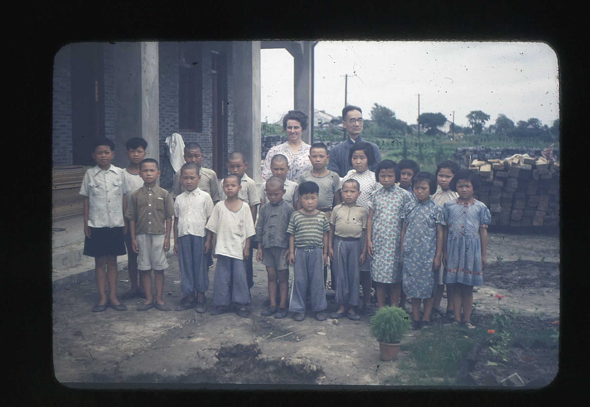
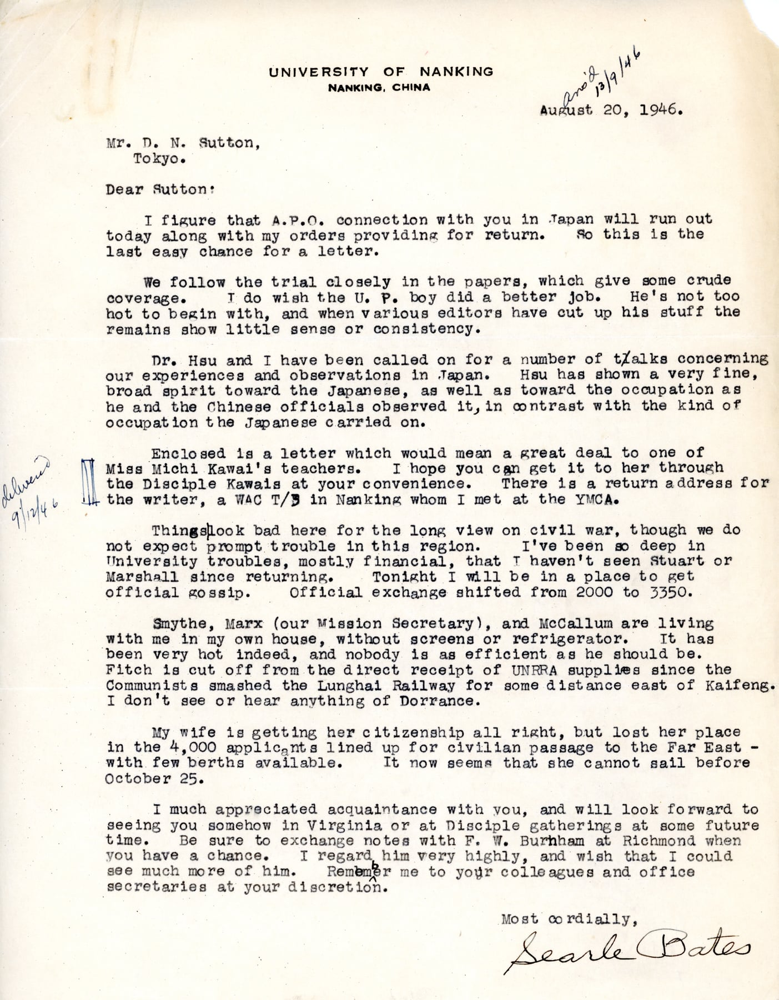
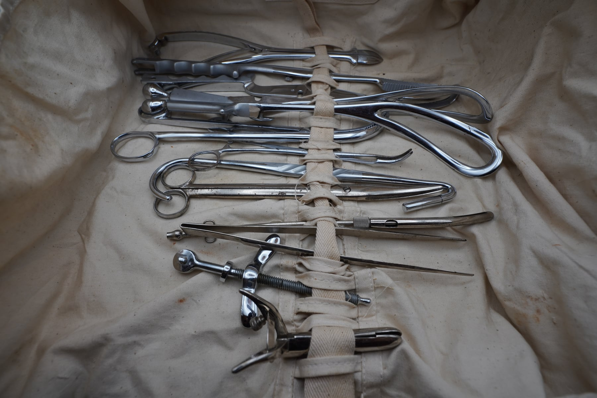
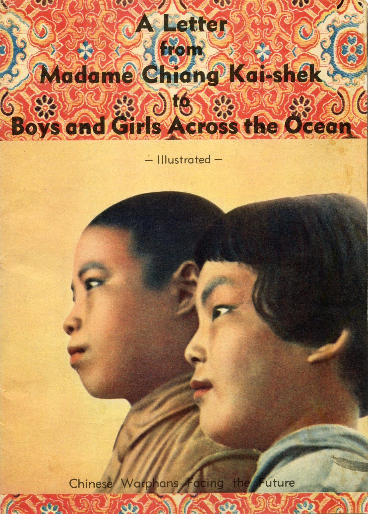
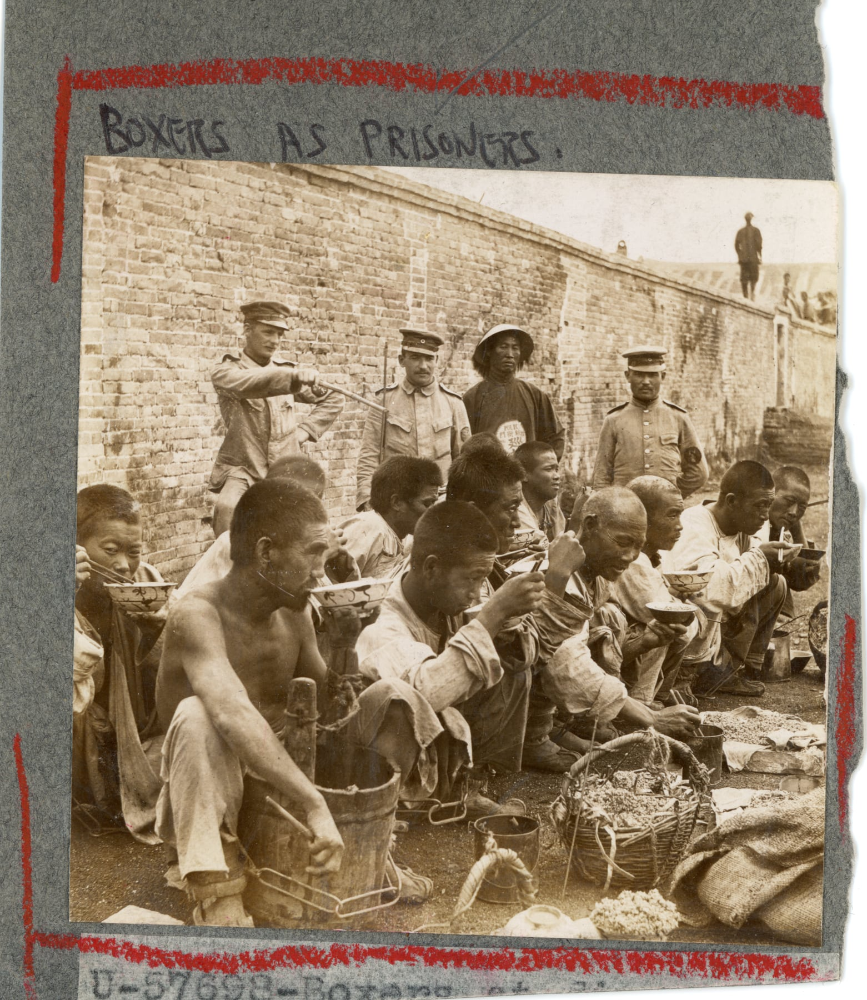
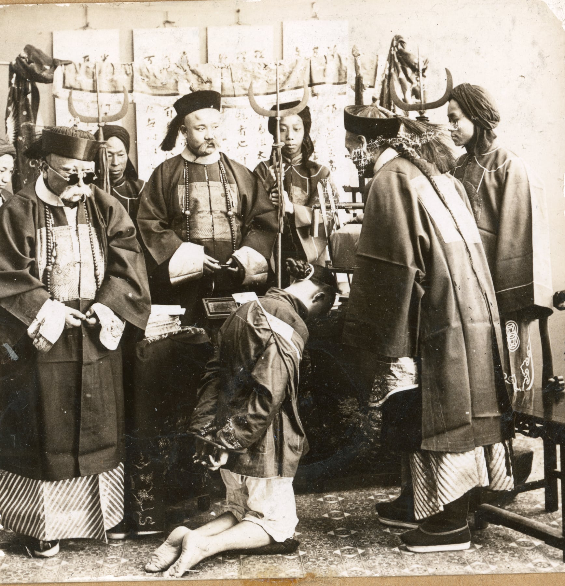

01
Children and wartime relief
Photographs of children and orphans, relief publications, and overseas fundraising records trace aid to the youngest victims of war.
Original objects from late Qing China, wartime Asia and Chinese lives overseas.
Eight objects. Choose a theme, or enlarge an original to look closely.
Browse exhibition posters, historical materials and visits to the museum. Choose a group, then select an image to view it in full.
Follow a thread through the archive.
These six themes connect individual objects to histories of war, relief, political change and everyday life.

Photographs of children and orphans, relief publications, and overseas fundraising records trace aid to the youngest victims of war.

Letters about the Tokyo Trial, the University of Nanking, and postwar investigations offer a way to study justice, testimony, memory, and evidence.

Medical instruments, nursing texts, and relief records document treatment, transport, and support beyond the battlefield.

Educational and public-facing publications for children across the Pacific brought the Far East into North American classrooms and homes.

Photographs from the late nineteenth and early twentieth centuries record China amid war, treaties, and international photography.

Portraits, inscriptions, and original mounts offer clues to personal identity, social status, and visual culture.